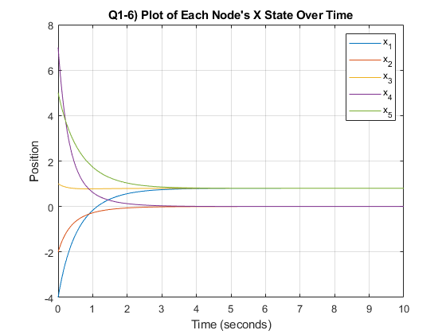

Contents
% ENAE4880 % % Romeo Perlstein % % HW1 % % I thought the only lonely place, was on the moon! clear; clc; close all
Q1
fprintf("Q1)\n\n") fprintf("1)\n")
1
Given the graph in fig 1., we can find the degree matrix as the following:
num_nodes = 5;
degree_mat = [
2 0 0 0 0;
0 2 0 0 0;
0 0 2 0 0;
0 0 0 2 0;
0 0 0 0 2];
fprintf("Degree Matrix:\n")
disp(degree_mat);
adjacency_mat = [
0 1 0 0 1;
1 0 1 0 0;
0 1 0 1 0;
0 0 1 0 1;
1 0 0 1 0];
fprintf("Adjacency Matrix:\n")
disp(adjacency_mat);
lapacian_mat = degree_mat - adjacency_mat;
fprintf("Laplacian Matrix\n")
disp(lapacian_mat);
L_rank = rank(lapacian_mat);
fprintf("Network is ")
if(L_rank == num_nodes - 1)
fprintf("CONNECTED\n")
else
fprintf("NOT CONNECTED\n")
end
[r_eig_vec, eig_vals_mat, l_eig_vec] = eig(lapacian_mat);
for i=1:num_nodes
eig_vals(i) = eig_vals_mat(i,i);
end
eig_vals = eig_vals';
fprintf("Eigenvalues of Laplacian Matrix:\n")
disp(eig_vals);
fprintf("Right Eigenvectors:\n")
disp(r_eig_vec)
fprintf("Left Eigenvectors:\n")
disp(l_eig_vec)
x0 = [-2; 4; -1; 7; 5];
fprintf("Initial Starting States:\n")
disp(x0);
2
fprintf("2)\n") c = 0; for i=1:num_nodes c = c + (l_eig_vec(i,1)*x0(i)); end fprintf("Agreement Value From Lecture:\n") disp(c) tau(:) = 1/eig_vals(2); fprintf("Speed of Convergence From Lecture:\n") disp(tau); % ODE SETUP tall_er_ant = (10^-13); % Tolerance step_size = 0.01; % step size max_time = 10; % max time (0->max_time) t = [0:step_size:max_time]; % timestep % ODE options ODE_options = odeset("RelTol", tall_er_ant, "AbsTol", tall_er_ant); [T,X] = ode45(@myodefun, t, x0, ODE_options, lapacian_mat); rounded_X = round(X, 3); for i=1:length(t) if((rounded_X(i,1) == rounded_X(i,2)) && (rounded_X(i,2) == rounded_X(i,3)) && (rounded_X(i,3) == rounded_X(i,4)) && (rounded_X(i,4) == rounded_X(i,5))) agreement_val = round(X(i,1), 3); agreement_time = T(i); break end end fprintf("Agreement Value (From Integration of Agreement Protocol - rounded to 3 decimal places):\n") disp(agreement_val) fprintf("Agreement Time (From Integration of Agreement Protocol):\n") disp(agreement_time)
3
fprintf("3)\n") plot(T,X) title("Q1-3) Plot of Each Node's State Over Time") xlabel("Time (seconds)") ylabel("Position") legend(["x_1", "x_2", "x_3", "x_4", "x_5"]); grid on for i=1:num_nodes figure plot(T,X(:,i)) title(["Q1-3) Plot of x_" + int2str(i) + " State Over Time"]) xlabel("Time (seconds)") ylabel("Position") grid on end
4
fprintf("4)\n") Id = eye(2); LxId = kron(lapacian_mat, Id); fprintf("Kronecker Product of L and $I_D:\n") disp(LxId) % ODE SETUP tall_er_ant = (10^-13); % Tolerance step_size = 0.025; % step size max_time = 10; % max time (0->max_time) t = [0:step_size:max_time]; % timestep % ODE options ODE_options = odeset("RelTol", tall_er_ant, "AbsTol", tall_er_ant);
5)
fprintf("5)\n") x0 = [-4; -2; 1; 7; 5; -5; 2; 6; 0; -6]; [T,X] = ode45(@myodefunR2, t, x0, ODE_options, LxId); % Find time to consensus agreement_val = [0,0]; agreement_time = 0; for i=1:length(t) if(round(abs(X(i,2) - X(i,4)), 4) <= 1e-4) agreement_val = [X(i,2), X(i,5+2)]; agreement_time = T(i); break end end fprintf("Agreement Value for x_2 and x_4 (From Integration of Agreement Protocol - rounded to 3 decimal places):\n") disp(agreement_val) fprintf("Agreement Time for x_2 and x_4 (From Integration of Agreement Protocol):\n") disp(agreement_time) agreement_val = [0,0]; agreement_time = 0; for i=1:length(t) if(round(abs(X(i,3) - X(i,5)), 4) <= 1e-4) agreement_val = [X(i,3), X(i,5+3)]; agreement_time = T(i); break end end fprintf("Agreement Value for x_1, x_3, and x_5 (From Integration of Agreement Protocol - rounded to 3 decimal places):\n") disp(agreement_val) fprintf("Agreement Time for x_1, x_3, and x_5 (From Integration of Agreement Protocol):\n") disp(agreement_time)
6
fprintf("6)\n") figure plot(T,X) title("Q1-6) Plot of Each Node's State Over Time") xlabel("Time (seconds)") ylabel("Position") legend(["x_1","x_2","x_3","x_4","x_5","y_1","y_2","y_3","y_4","y_5"]); grid on figure plot(T,X(:,1:5)) title("Q1-6) Plot of Each Node's X State Over Time") xlabel("Time (seconds)") ylabel("Position") legend(["x_1","x_2","x_3","x_4","x_5"]); grid on figure plot(T,X(:,6:10)) title("Q1-6) Plot of Each Node's Y State Over Time") xlabel("Time (seconds)") ylabel("Position") legend(["y_1","y_2","y_3","y_4","y_5"]); grid on for i=1:num_nodes figure hold on plot(T,X(:,i)) plot(T,X(:,5+i)) title(["Q1-6) Plot of x_" + int2str(i) + " State Over Time"]) xlabel("Time (seconds)") ylabel("Position") grid on end figure % for i = 1:length(t) % hold off % scatter(X(i,1), X(i,6), "b") % hold on % scatter(X(i,2), X(i,7), "r") % scatter(X(i,3), X(i,8), "g") % scatter(X(i,4), X(i,9), "magenta") % scatter(X(i,5), X(i,10), "black") % % plot(X(1:i,1), X(1:i,6), "b") % plot(X(1:i,2), X(1:i,7), "r") % plot(X(1:i,3), X(1:i,8), "g") % plot(X(1:i,4), X(1:i,9), "magenta") % plot(X(1:i,5), X(1:i,10), "black") % yline(0, "--black") % xline(0, "--black") % axis equal % grid on % title("Plot of Each Node's Position") % xlabel("X coordinate") % ylabel("Y coordinate") % legend(["x_1","x_2","x_3","x_4","x_5"]); % % drawnow % end hold off scatter(X(end,1), X(end,6), "b") hold on scatter(X(end,2), X(end,7), "r") scatter(X(end,3), X(end,8), "g") scatter(X(end,4), X(end,9), "magenta") scatter(X(end,5), X(end,10), "black") plot(X(1:end,1), X(1:end,6), "b") plot(X(1:end,2), X(1:end,7), "r") plot(X(1:end,3), X(1:end,8), "g") plot(X(1:end,4), X(1:end,9), "magenta") plot(X(1:end,5), X(1:end,10), "black") yline(0, "--black") xline(0, "--black") axis equal grid on title("Q1-6) Plot of Each Node's Position") xlabel("X coordinate") ylabel("Y coordinate") legend(["x_1","x_2","x_3","x_4","x_5"]); function x_dot = myodefun(t, x, L) x_dot = -L*x; end function x_dot = myodefunR2(t, x, LxId) x_dot = -LxId*x; end
Q1)
1)
Degree Matrix:
2 0 0 0 0
0 2 0 0 0
0 0 2 0 0
0 0 0 2 0
0 0 0 0 2
Adjacency Matrix:
0 1 0 0 1
1 0 1 0 0
0 1 0 1 0
0 0 1 0 1
1 0 0 1 0
Laplacian Matrix
2 -1 0 0 -1
-1 2 -1 0 0
0 -1 2 -1 0
0 0 -1 2 -1
-1 0 0 -1 2
Network is CONNECTED
Eigenvalues of Laplacian Matrix:
-0.0000
1.3820
1.3820
3.6180
3.6180
Right Eigenvectors:
0.4472 0.6286 -0.0697 0.2031 -0.5990
0.4472 0.2605 0.5763 -0.5164 0.3652
0.4472 -0.4676 0.4259 0.6324 0.0081
0.4472 -0.5495 -0.3131 -0.5069 -0.3782
0.4472 0.1280 -0.6194 0.1878 0.6039
Left Eigenvectors:
0.4472 0.6286 -0.0697 0.2031 -0.5990
0.4472 0.2605 0.5763 -0.5164 0.3652
0.4472 -0.4676 0.4259 0.6324 0.0081
0.4472 -0.5495 -0.3131 -0.5069 -0.3782
0.4472 0.1280 -0.6194 0.1878 0.6039
Initial Starting States:
-2
4
-1
7
5
2)
Agreement Value From Lecture:
5.8138
Speed of Convergence From Lecture:
0.7236
Agreement Value (From Integration of Agreement Protocol - rounded to 3 decimal places):
2.6000
Agreement Time (From Integration of Agreement Protocol):
6.2100
3)
4)
Kronecker Product of L and $I_D:
2 0 -1 0 0 0 0 0 -1 0
0 2 0 -1 0 0 0 0 0 -1
-1 0 2 0 -1 0 0 0 0 0
0 -1 0 2 0 -1 0 0 0 0
0 0 -1 0 2 0 -1 0 0 0
0 0 0 -1 0 2 0 -1 0 0
0 0 0 0 -1 0 2 0 -1 0
0 0 0 0 0 -1 0 2 0 -1
-1 0 0 0 0 0 -1 0 2 0
0 -1 0 0 0 0 0 -1 0 2
5)
Agreement Value for x_2 and x_4 (From Integration of Agreement Protocol - rounded to 3 decimal places):
-0.0000 0.8001
Agreement Time for x_2 and x_4 (From Integration of Agreement Protocol):
7.1750
Agreement Value for x_1, x_3, and x_5 (From Integration of Agreement Protocol - rounded to 3 decimal places):
0.8000 -0.0000
Agreement Time for x_1, x_3, and x_5 (From Integration of Agreement Protocol):
7.3500
6)
